I am a designer who loves uncovering the friction users feel and translating it into intuitive, human-centered experiences.
Designer with a computer science foundation. I move fluidly from research to interface — and because I can read and write code, I collaborate more effectively with developers, cut down the back-and-forth, and help produce work that actually ships.
One of my habits is opening apps I use every day and paying attention to where I hesitate, get confused, or give up — then checking reviews to see if others feel the same way. From there I think through what I'd change if I were on the team. I put myself in the user's position first and work outward: clear paths, minimal friction, and interactions that feel natural from the very first tap.
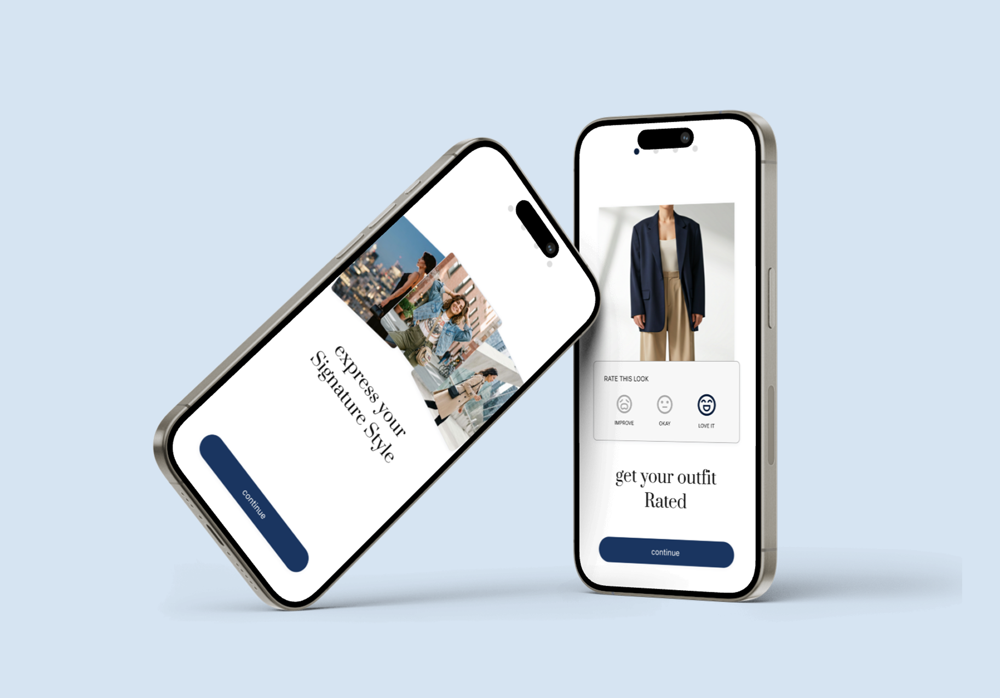
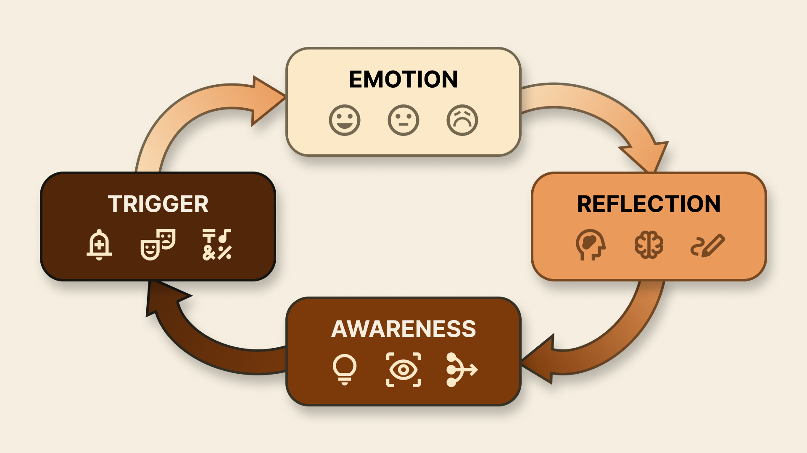
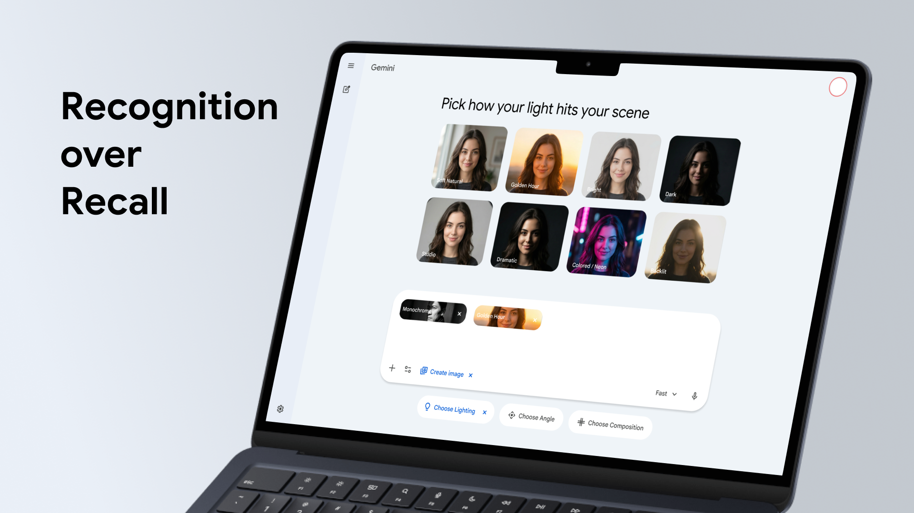
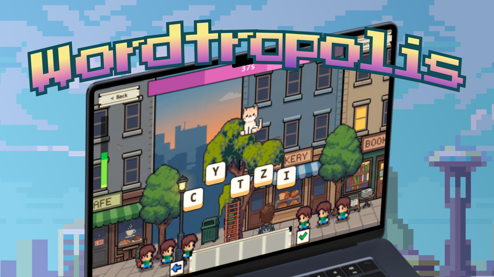
Open to internships, full-time/part-time roles, and collaborative projects. Response within 24 hours.
A niche social app for fashion enthusiasts to share one outfit a day, get structured community feedback, and track their style progression — designed and being built solo, end to end.
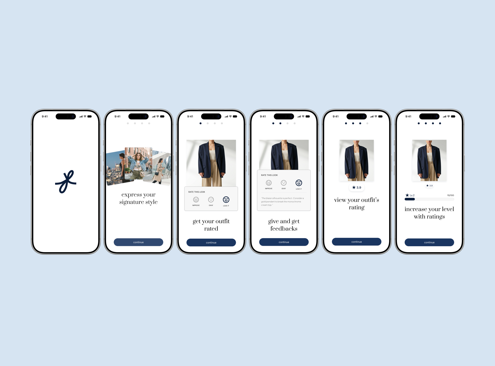
My thought: How can one dress that well? I want to get honest feedbacks on my outfit so I can dress well too. I need small judement calls: the colour combination, the length, the proportions, the vibe.
That was a personal itch, not a product idea. What turned it into one was a simple question: was I really the only person who felt this way? That question is what sent me into research instead of straight into Figma.
To find out if others felt the same way, I looked at where fashion content already lives — Instagram, Pinterest, Lemon8 — and read through user reviews of each. The pattern was consistent: some didn't trust these platforms anymore, whether because of ad density, opaque algorithms, or moderation that feels arbitrary.
Along with that, none of them were built for a specific, recurring loop of "post my outfit, get real feedback, see myself improve."
| Platform | Strength | Where it falls short for fashion |
|---|---|---|
| Large audience | Fashion content buried under unrelated content and algorithmic noise | |
| Inspiration discovery | No mechanism for personal feedback on your own outfit | |
| TikTok | Discovery, virality | Hard to track personal style progression over time |
| BeReal | Daily authenticity habit | Not fashion-focused at all |
The competitive review analysis and the 12-person survey were both informal and self-run research. It was not a statistically representative study. I'm treating the findings above as directional signal that shaped the product, not as validated market data.
Rather than sketching screens first, I wrote a full product requirements document directly from the research: onboarding & style personalization, posting constraints, a dual-tab search engine, community rating & anonymized voter feedback, a gamified leveling system, and social/wishlist features — plus non-functional requirements around load times and the "midnight crunch" write-load spike when every user's daily score finalizes at once. Writing the PRD myself, rather than jumping straight to UI, is what let every later design decision trace back to a specific finding instead of a gut feeling.
With the requirements drafted, the next question was who, specifically, I was building each of them for.
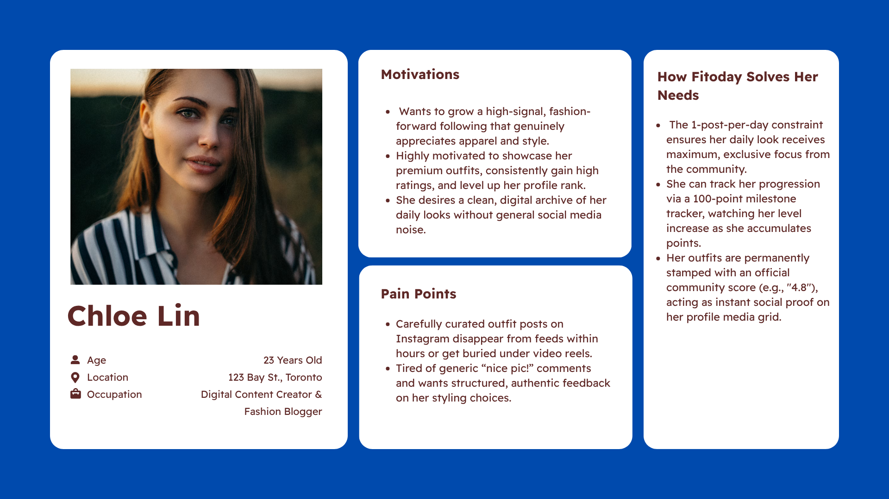
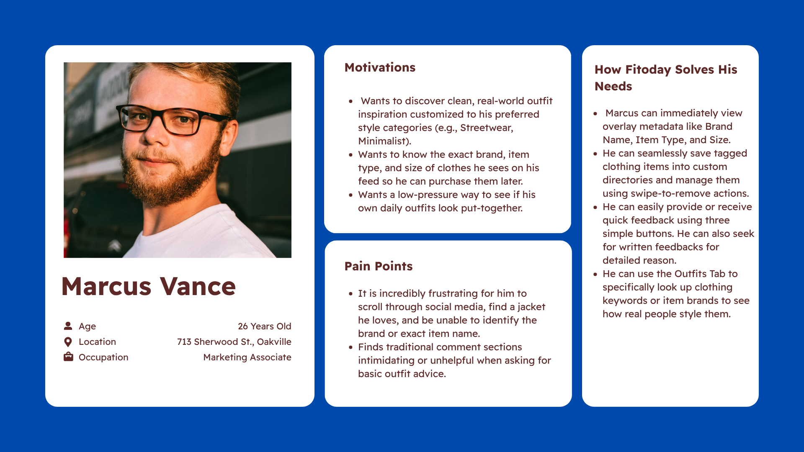
Every flow started as a paper-thin wireframe before any visual design decisions were made — typography, colour, spacing, and imagery all came after the interaction pattern was validated.
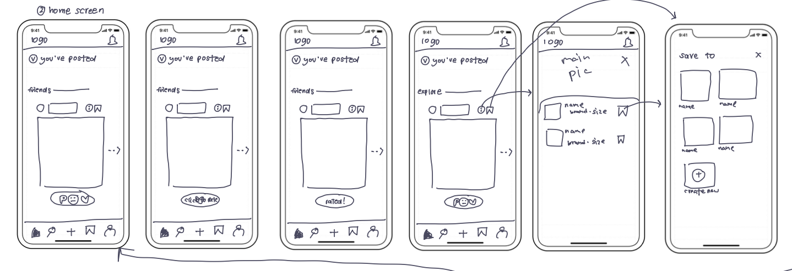
Three constraints carry almost the entire product. Each one was a deliberate trade-off, not a default.
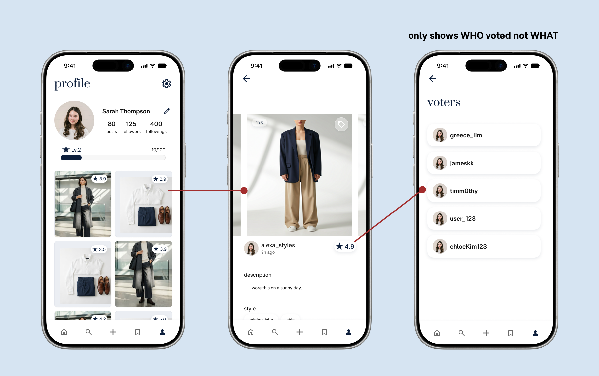
I ran a 5-person usability test on the Figma prototype, asking participants to post an outfit, save an item, and use the rating system — recording task success, completion time, and where people got stuck.
Three changes came directly out of that test: an optional comment field after rating; a per-user toggle for whether rated outfits show on a public profile or stay private to the owner; and the ability to change a vote within the 24-hour rating window instead of it being final on submit.
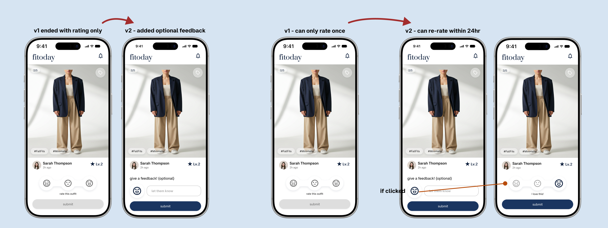
secureLogin Cloud Function: per-IP rate limiting, a five-attempt lockout with progressive delay, and a lockout notification email"This is the first project I conducted alone throughout the entire project lifecycle. It forced me to stop treating 'design' and 'engineering feasibility' as separate stages."
A student well-being platform that helps users identify emotional patterns, strengthen personal growth competencies, and build healthier coping habits through guided reflection and behavioral tracking.
Through literature review, we found that emotion regulation sits at the core of student well-being. Yet most wellness apps were built around recording emotions alonee without helping users understand what triggered them or how other competencies affected their well-being. The research pointed clearly in one direction: students gained more from contextual reflection and guided interpretation than from tracking alone.
Our first direction was a sleep-focused app that tracked university students' sleep schedules as a lever for emotion regulation. After completing the literature review, we found sleep alone was too narrow — regulation depended on a broader set of personal competencies, like resilience and social support, not rest in isolation. That finding is what moved us away from sleep-tracking and toward the competency-based framework that shaped the rest of this project.
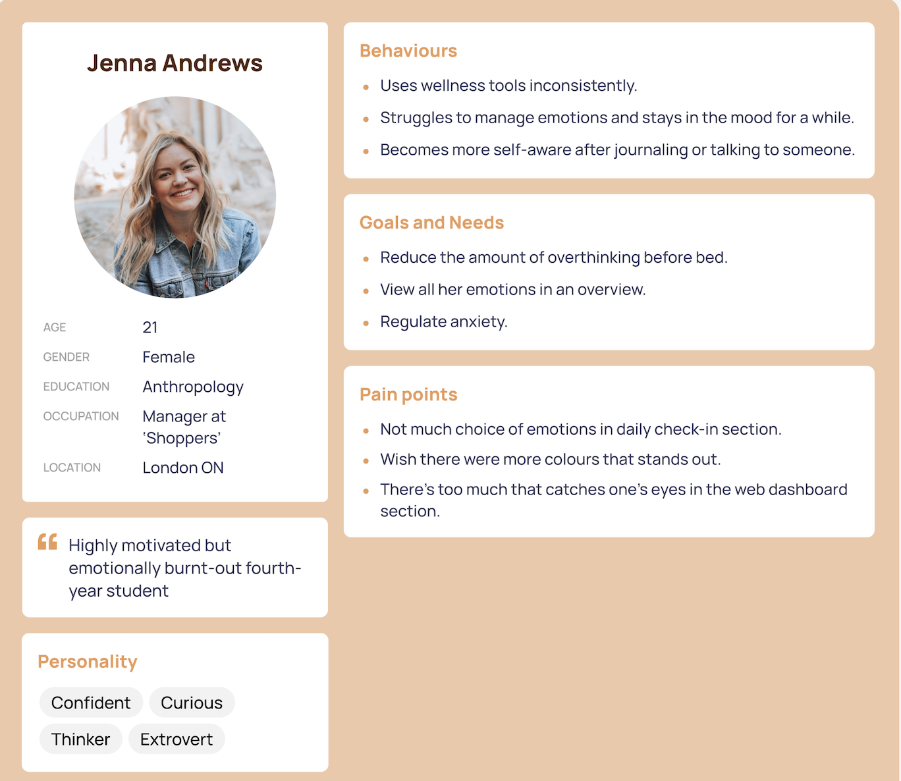
Research findings shaped the product's structure at every level. Rather than centering the experience on passive logging, the platform guided users through recurring reflection loops tied to real-life contexts — workload, social interaction, routines, sleep, and stress. This helped users connect emotional states to specific behavioural patterns instead of treating emotions as isolated data points.
One major challenge in wellness products is sustaining meaningful engagement after onboarding. To address this, the experience introduced a competency-based growth system where users could choose emotional competencies they wanted to strengthen (such as resilience, emotion regulation, or social support) and work toward targeting those areas through monthly reflections, guided challenges, and personal goals. Completing these activities built their competency level visibly over time, giving users a clear sense of direction and progress rather than just a log of past moods.
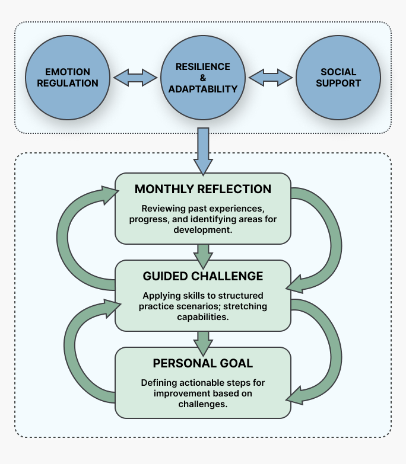
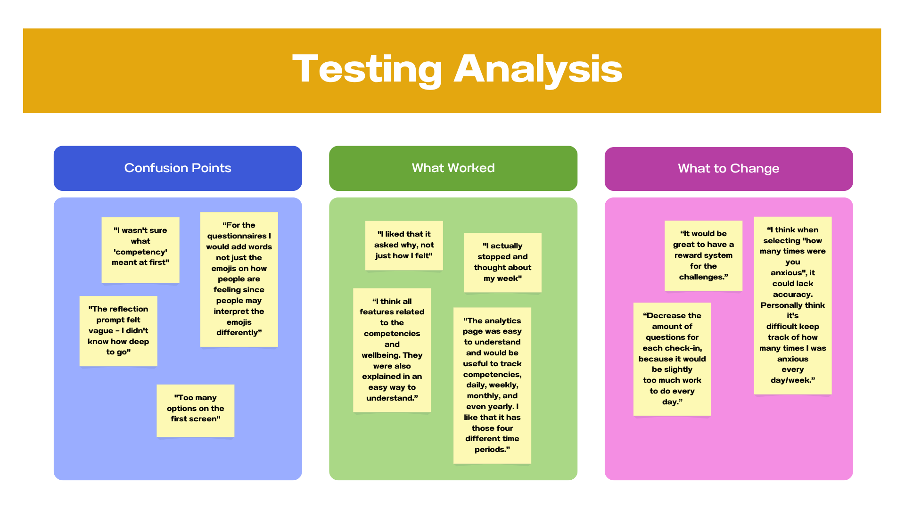
We ran usability testing with 18 Western University students using a three-part protocol: a pre-survey to establish baseline emotional awareness habits, a think-aloud interactive session with the V1 prototype, and a post-survey to capture immediate perception shifts. The V2 prototype was iterated directly from the patterns and pain points surfaced in those sessions.
"This project changed how I think about behavioral UX. Designing for well-being isn't about collecting more information. It's about helping users recognize themselves within it. It also deepened my interest in how design choices can shape behaviour over time: how the structure of an experience, not just its visuals, can gradually shift how someone understands and relates to themselves."
Reducing cognitive friction in AI-assisted photo editing through visual interaction design after identifying the accessibility gap through community research and proposing a concrete interaction redesign to address it.
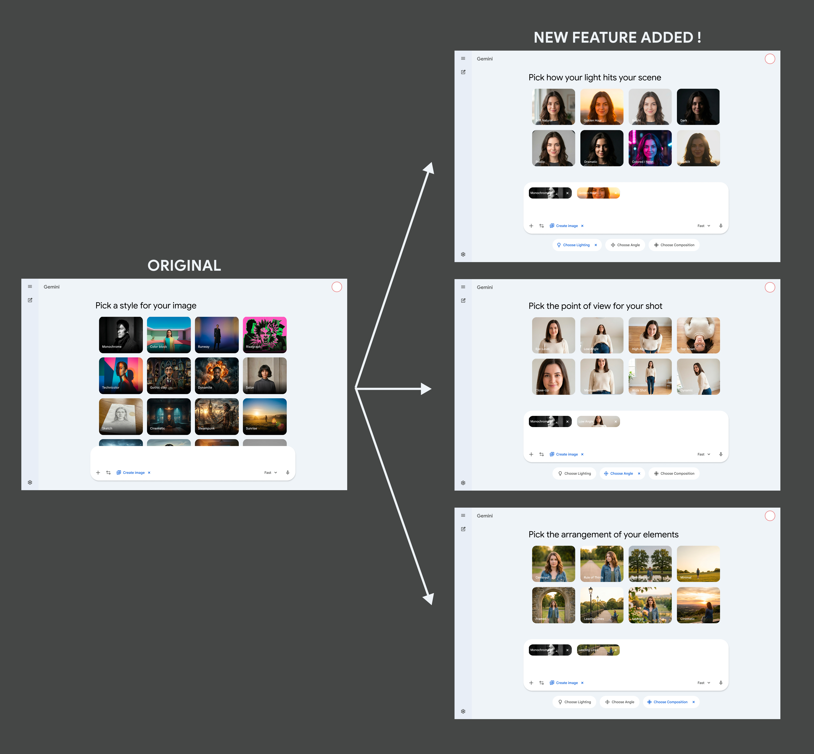
Most users don't think in photography or videography terminology — they think in feelings and visuals. When the interface required them to translate a creative idea into the right technical word, many simply gave up before they started. The tool's capabilities were never in question; the gap was in how users were expected to express what they wanted.
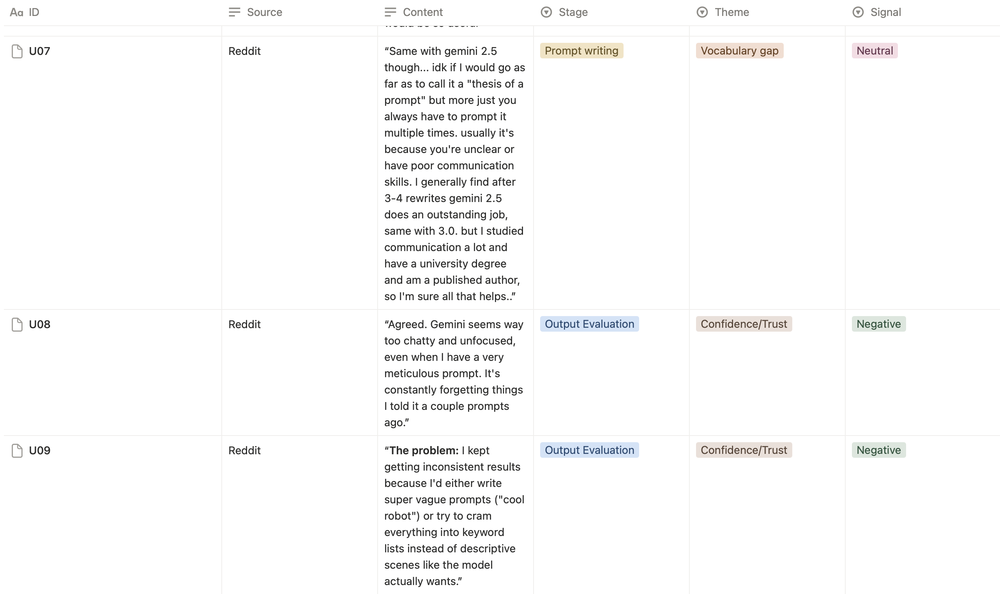
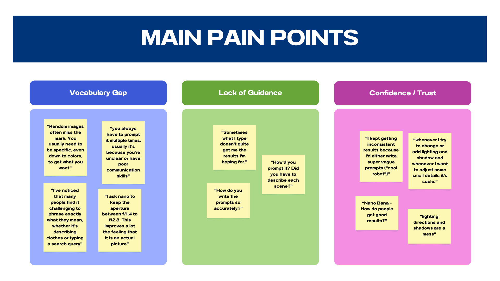
Instead of typing expert terminology, users select visual examples directly. The interaction shifts from recall-based input — "remember the right word" — to recognition-based exploration: "pick what looks right." The cognitive demand drops from expert memory to beginner intuition. The feature set stays the same and the barrier disappears.
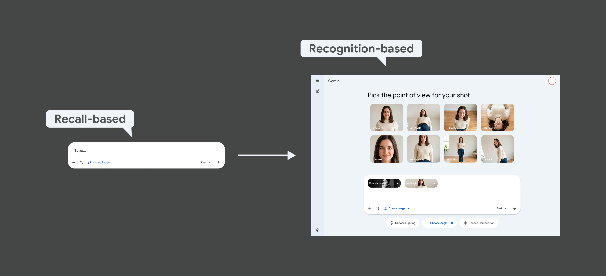
Before treating recognition-over-recall as settled, I ran a small informal test with 3 people who had no photography or videography background. I first asked each person to describe, in words, a scene they had in mind. Then I asked them to rebuild the same scene by picking preview images for angle, lighting, and proportion one at a time. Across all three, the image built through visual selection was noticeably closer to what they had originally pictured than what they were able to produce from a written description alone.
This was a small, informal test. Not a formal usability study with a real sample size. However, it's a genuine early signal that recognition-based selection outperforms recall for non-expert users on this task.
This is a proposed redesign, not a shipped or fully user-tested feature — the concept had an informal validation pass (see Early Validation above), but the points below still describe design intent, not measured production results.
"This project reinforced how often UX friction comes from assumptions embedded in language. Sometimes accessibility is not about simplifying features — it's about simplifying interpretation."
A gamified spelling learning platform designed for young students — built around motivation psychology, adaptive challenge, and meaningful progression. The project ran under a tight academic timeline, which pushed us to prioritize decisions quickly and ground every choice in learning science rather than intuition.
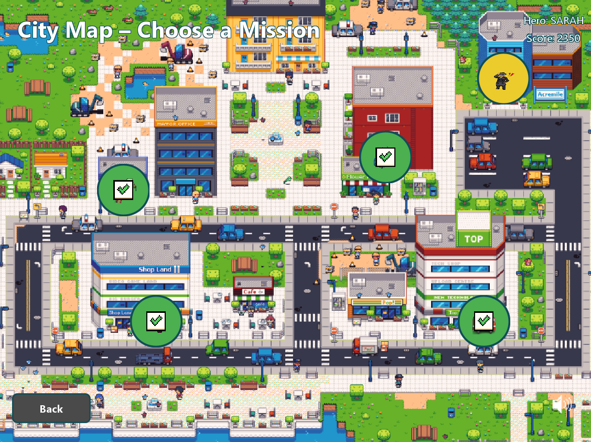
The original spelling tool suffered from low engagement, static interaction, and unclear feedback loops. The root issue: this tool was built around content delivery, not around the psychology of how kids actually stay motivated and retain information.
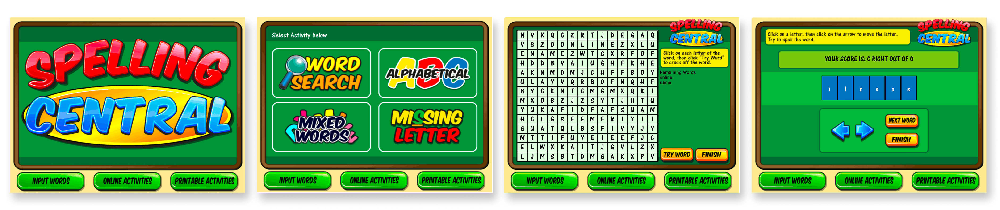
The redesign wasn't based on intuition about what kids might like. It was grounded in three principles from learning science:
- intrinsic motivation (children engage more when challenge feels meaningful)
- spaced repetition (returning to difficult words at optimal intervals improves retention)
- multi-sensory reinforcement (visual + audio feedback accelerates learning)
Each design decision traces back to one of these principles.
Rather than layering a game skin on top of existing content, I focused, as UI lead, on the mission → boss battle progression structure. Each mission functions as a spaced repetition session, returning to difficult words at intervals optimized for retention. The boss battle serves as the mastery check — a culminating challenge that gives the progression real stakes. The narrative arc gives children a genuine reason to return, and a real sense of accomplishment when they reach the end. Crucially, the progression system was designed before any visual decisions were made.
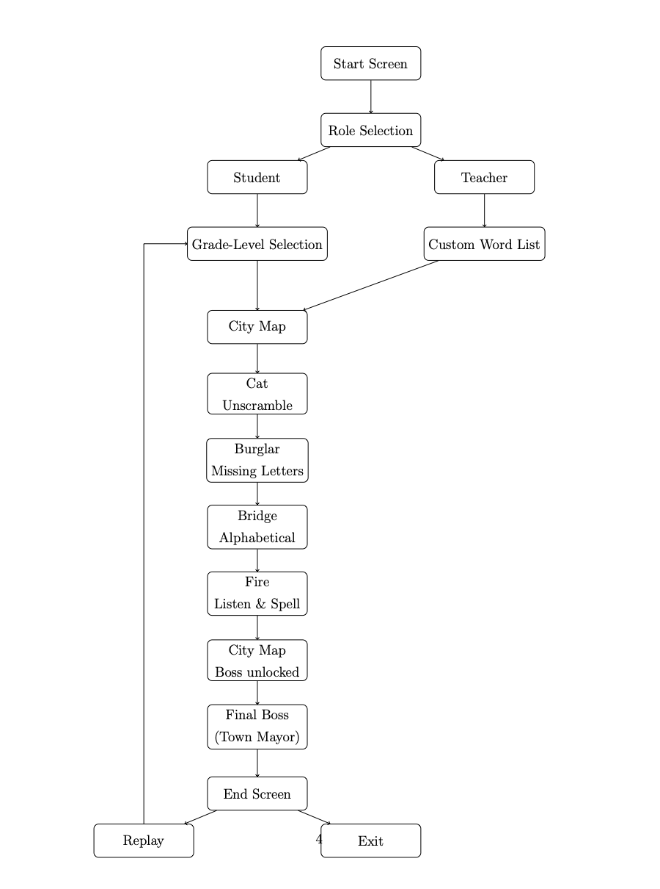
The full experience was drafted in Figma and implemented in Java Swing, allowing gameplay pacing, adaptive challenge, and feedback systems to be tested beyond static mockups.
Implementing the experience exposed how gameplay pacing, feedback timing, and adaptive challenge directly affected user engagement in practice. Building the prototype end-to-end strengthened the relationship between interaction decisions and behavioural outcomes.
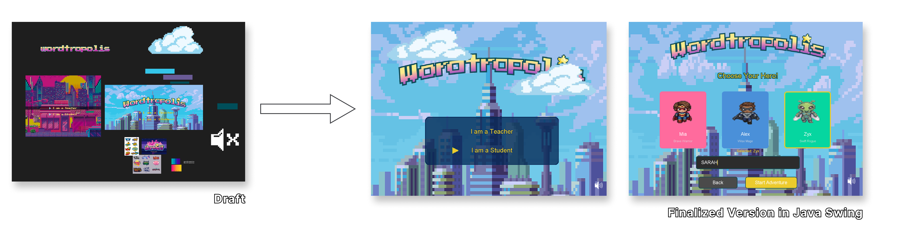
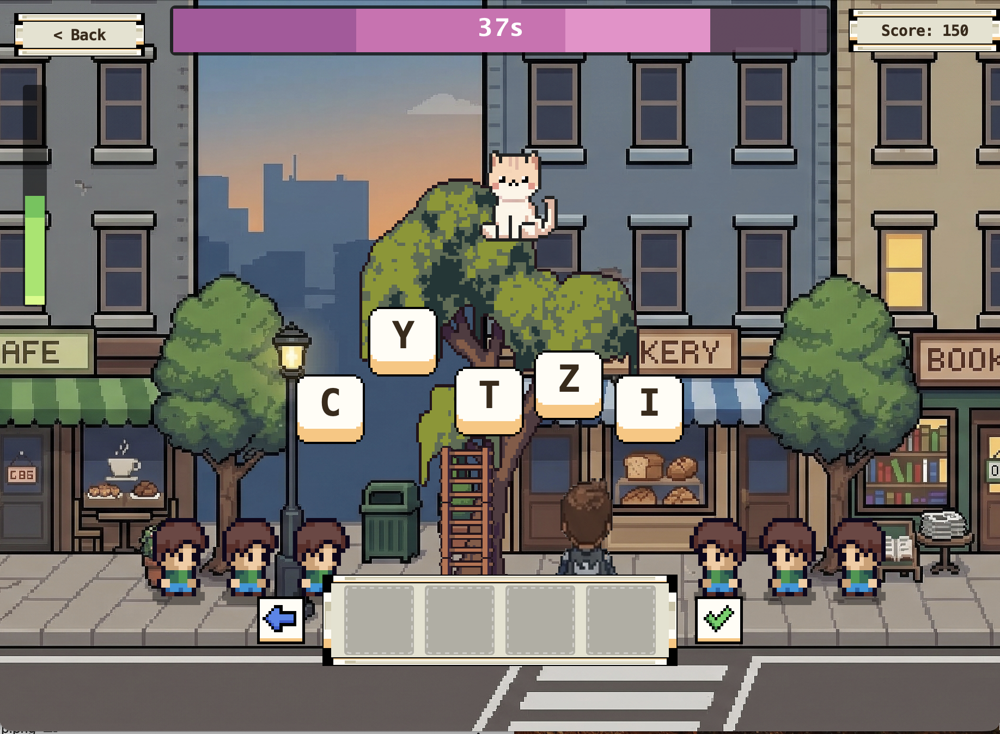
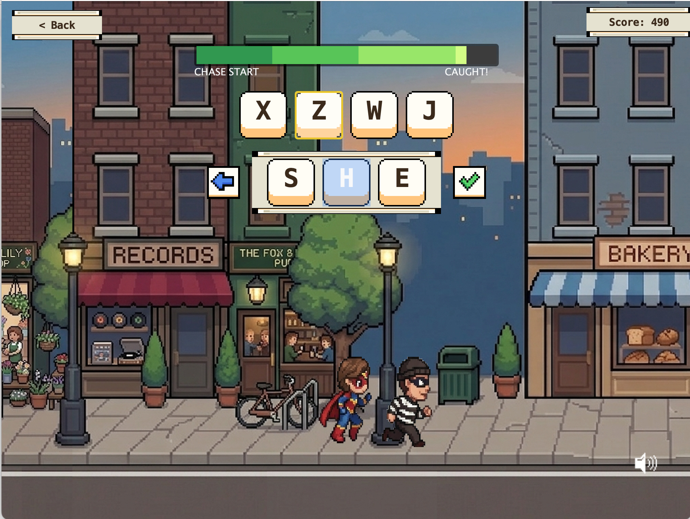
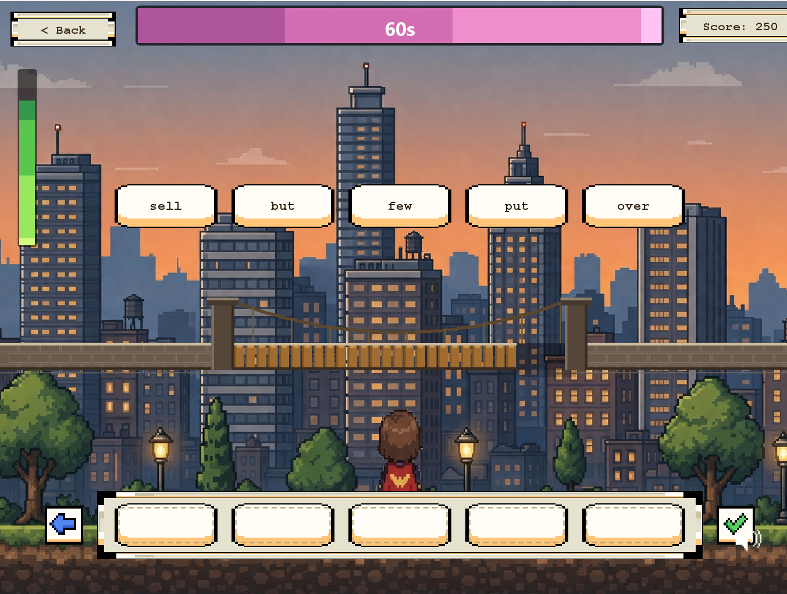
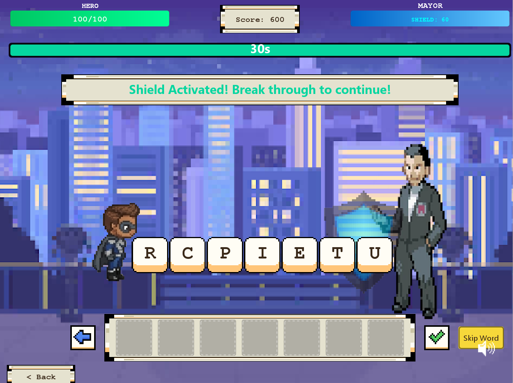
"Working within a tight school project timeline pushed me to prioritize decisions quickly and defend them clearly. Given more time, I would have explored more advanced adaptive features and conducted user testing with children directly. But the core lesson stuck: effective learning experiences aren't built by adding rewards on top of education — they emerge when motivation itself becomes part of the interaction system."